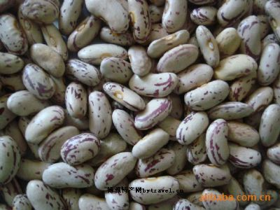
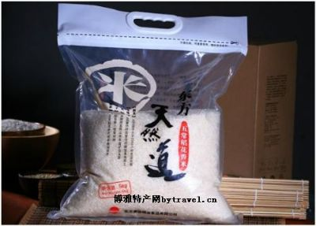
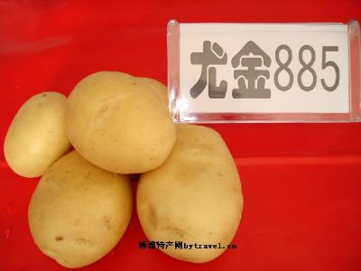
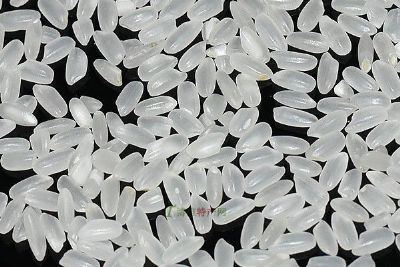
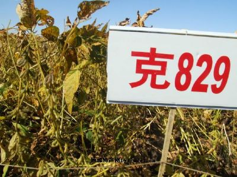
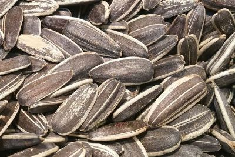

“奶花芸豆产依安，花色纯正粒饱满，多种用途多品味，营养成分不一般，富了客商和农户，走进世界各国间”。这是对依安县奶花芸豆的真实写照。近年来，依安县把发展营养丰富、适应性好、用途广泛、市场走俏、经济效益高的奶花芸豆作为促农增收、拉动县域经济发展的重要产业。通过正确引导、大力扶持、市场牵动、效益吸引，使该项产业不断做大做强，并行销到世界五大洲。小芸豆成为农民致富“金豆豆”种植奶花芸豆与其他作物相比，投入低、风险小、效益高，在依安县有广泛的群众基础，从八十年代中期这个县就开始规模种植，１９９９年以后，依安县一些乡镇，特别是最适合种植的乌裕尔河以南的１０个乡镇，开始把奶花芸豆作为主栽作物，种植面积逐年扩大，多年来一直稳定在３５万亩以上。今年，这个县种植面积猛增到６０万亩，现在长势喜人，即将收获。
由于特殊的土质和地理位置，依安县生产的奶花芸豆花色纯正、粒型规范、光泽度好、蛋白质含量高，在国际市场上倍受欢迎，供不应求，并全部销到国外，其中总量的８０％销到南非、古巴、科威特、印尼、巴基斯坦，总量的２０％进入法国、美国市场，成为全国知名的奶花芸豆集散地，并牢牢确立了全省生产、出口第一县的地位。南非客商对依安县的奶花芸豆情有独钟，并作出这样的评价：依安县的奶花芸豆品质优良、口感上佳、色泽喜人、数量可观。如今，依安县的奶花芸豆在大连、天津、威海三个海关成为免检产品。在法国、美国，只有依安县的奶花芸豆才可以进超市。 
以黑龙江玛瑙为原料雕刻的工艺品。多以仕女、鸟兽、花卉、宝瓶、香炉等为题材，形象千姿百态。玛瑙是高温高压下形成的一种矿产，有灰白、红赫、翠绿等各种颜色，光彩夺目；内含一汪清水的水胆玛瑙尤其罕见，用它雕成的工艺品极为珍贵。有的如同牙雕一般雕成数层，里面几层雕成可以转动的玛瑙球，更显出技艺的精湛独到。
优良稻米：种植面积和产量居全省首位，质地优良，享有盛名。五常大米是生活中做米饭的佳品，其颗粒饱满、质地坚硬、色泽清白透饭粒油亮、香味浓 五常大米郁，素有“贡米”之称。说五常，道五常，五常最著名的当是大米。五常在黑龙江省的最南部，距离哈尔滨120公里左右，隶属于黑龙江省哈尔滨市的县级市，五常原名欢喜岭，清咸丰四年设“举仁、由义、崇礼、尚智、诚信”五个甲社，取其“三纲五常”之意，得名五常。既有儒雅的古韵，又体现了城市文化品位。真可谓古为今用，别有一番韵味，面积7512平方公里，是全国最大的水稻田超百万亩的县级市之一。国际权威人士说，在同纬度地区五常的水稻第一位。 
黑龙江省克山县，是马铃薯之乡。全县地貌类型主要地形为丘陵漫岗平原。境内整体趋势东北部地势高，丘陵起伏；西南部地势低，波状起伏，漫川漫岗。克山县土壤为淋溶黑钙土，松软肥沃，腐殖质层深厚，富含有机质，素有“黑土明珠”之称，pH值6.8-7.0之间，有机质含量4.0%，速效氮80-150ppm，速效磷14-30ppm，速效钾在150ppm以上。土壤地貌非常适合马铃薯生长。境内有5条河流：讷莫尔河、乌裕尔河、润津河、鳌龙沟、泰西河，这些河流夏季蓄水充足、无污染，有利于开发为灌溉用水。克山县地处黑龙江省第三、四积温带，属中寒温带大陆性季风气候，年均日照时数2709.9小时，年均气温1.1℃，≥10℃的有效积温2500℃，全年无霜期125天，年均降雨量550毫米，集中在6-8月份，正值土豆块茎膨大需水多的时期。以上气候特点适宜土豆生长所需的喜冷凉、长日照、膨大块茎水肥需求量大的生理特性。 
桦川大米，粒粒莹白如玉、充盈流脂，颗颗营养丰富、绿色健康，成饭醇香馥郁、绵软松爽，煲粥适口如饴、余味三日，素有“风吹米香人欲醉，食罢人去路还香”的美誉。 桦川县位于黑龙江省东部，三江平原腹地，松花江下游南岸桦川大米，东与富锦市相邻，西与佳木斯市接壤，南与集贤、桦南两县相连，北与汤原、萝北、绥宾县隔江相望，素以“天然福地，鱼米之乡”而著称。优越的自然和地理条件形成了桦川县的发展优势。一是稻米产业基础优势。桦川地处三江平原腹地，土地肥沃，地势平坦，在全县210万亩耕地中，水田多达90万亩，适宜改水田的旱田面积还有80万亩以上，水田面积可达到120万亩。水资源丰富，境内松花江流经97.5公里，地下水平均深度为5到7米，地下水储量大。县内有四座大型灌区，改造完成后，松花江直流灌溉面积可达到90万亩。种植水稻历史悠久，技术力量强，产量高，品质好，产品销往全国22个省市自治区。水稻加工能力强，全县有127家稻米加工企业，年加工能力在150万吨以上，已成为黑龙江省东部最大的水稻生产加工销售集散地之一。 
克山县素有“北国粮仓”、“大豆之乡”之称。克山大豆获国家地理标志证明商标。克山大豆为国家农产品地理标志保护产品。克山县位于黑龙江省西部、齐齐哈尔地区东北部。克山幅员约3320平方公里，有耕地面积约302万亩。克山物化天宝，土质肥沃，农业优势得天独厚，是全国重点商品粮基地县、大豆出口基地县和马铃薯基地县，素有“北国粮仓”、“大豆之乡”之称。黑龙江克山县绿色食品协会申报的“克山大豆”通过农业部农产品质量安全中心审查和组织专家评审，实施国家农产品地理标志登记保护。克山大豆划定的产地地域保护范围：克山县范围内15个乡镇，即古城镇、双河乡、河南乡、河北乡、向华乡、古北乡、北联镇、曙光乡、北兴镇、克山镇、西联乡、西建乡、发展乡、西河镇、西城镇。地理坐标为东经125°10′57″～126°08′18″，北纬47°50′51″～48°33′47″。 
响水大米，产于镜泊湖西北三十公里处，唐代渤海国上京龙泉府遗址附近的响水乡。它是黑龙江省的著名特产，驰名中外。 响水大米，颗粒丰满，质地坚硬，色泽青白、透明纯净，焖出的饭，汤似鲜乳，米如油注，饭质柔软，香味袭人。相传，在明、清时代，响水在米被誉为皇粮、御米，它和镜泊湖的湖鲫、山里的紫貂，同是向朝廷进贡的侍品。 关于响水，民间有一个传说：在很早很早以前，上京龙泉府附近有一位善弹古琴的老琴师，他有个如花似玉的女儿，叫水儿，渤海国郡王见水儿容貌出众，便把她抢进宫。老琴师想水儿，天天坐在牡丹江畔的玄武岩上弹琴，后来，老琴师死了，可是，想水儿的琴声仍在田野间回荡着，人们便把这地方叫"想水儿"。因为这一带产的大米分外好吃，人们就把这儿的大米，叫"想水儿"大米，便是如今的响水大米。
甘南县葵花种植历史悠久。葵花籽被国家绿色食品发展中心评为-绿色食品，具有产量高、籽大、色泽鲜、口感好等特点，使用后具有健脑、养肝、益肾、降压、降低胆固醇之功效，深受中外客商垂青。甘南县2000年被命名为“中国向日葵之乡”，是国家级绿色葵花生产基地、全国节水灌溉示范县。 甘南县位于黑龙江省西北部，大兴安岭的南麓。全县幅员面积4792平方公里，总耕地面积297万亩，其中葵花年种植面积80万亩。年平均降水量455毫米，光照充足，土壤有机质含量在3.6%以上。全县下辖5乡5镇，95个行政村，总人口37万人。幅员面积4792平方公里，其中：耕地278万亩，草原112万亩，可供开发的水面8.4万亩。全县水草丰盛纯净，空气清新，主水源的嫩江干流源于大兴安岭，无污染源，水质好，水量充沛。 